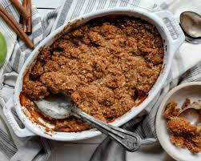

Apple Crumble

Description
This apple crumble recipe is the perfect way to welcome fall. Full of cozy autumnal flavors like cinnamon and nutmeg, you'll want to make this apple crumble all season long.
ingredients
- Apples: Granny Smith apples are ideal for this recipe, as they are quite flavorful and tend to hold their shape during the baking process.
- Lemon juice: Sprinkle a mixture of lemon juice and water over the apples to prevent browning.
- Sugar: A cup of white sugar sweetens things up, perfectly balancing the tart flavor from the Granny Smith apples.
- Flour: You'll need all-purpose flour for the "crumbly" part of this apple crumble recipe!
- Spices: This cozy dessert is spiced with cinnamon and nutmeg. A pinch of salt enhances the overall flavor, but it won't make it taste salty.
- Butter: Unsalted butter adds richness and flavor to the topping. Make sure the butter is cold (otherwise, the sugary topping will spread).
Steps
- Place the apple pieces in a baking dish, then sprinkle with the lemon-water mixture.
- Combine the sugar, flour, spices, and salt in another bowl. Add the butter.
- Pour the flour mixture over the apples and bake until bubbly.